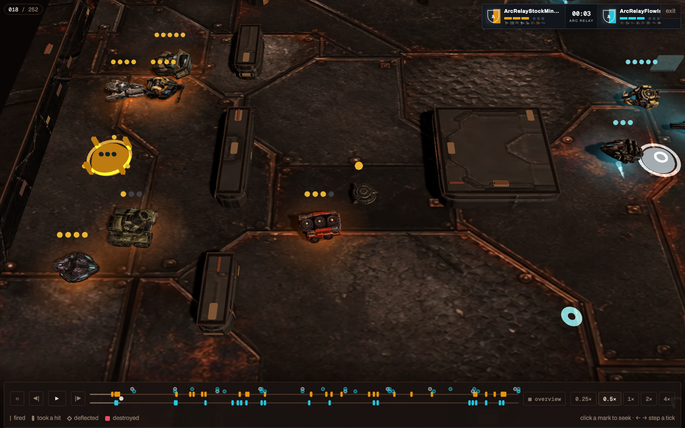
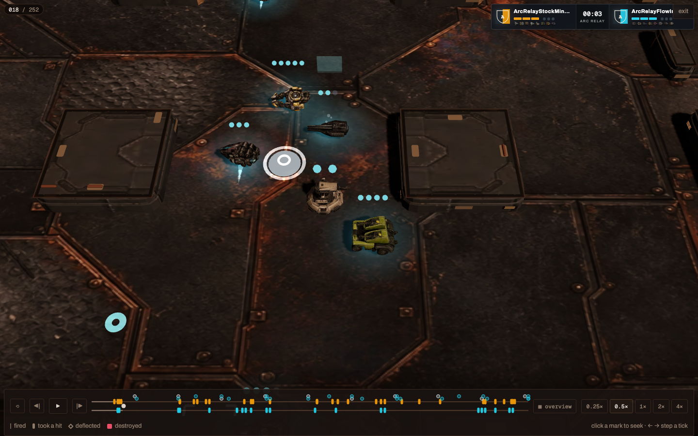
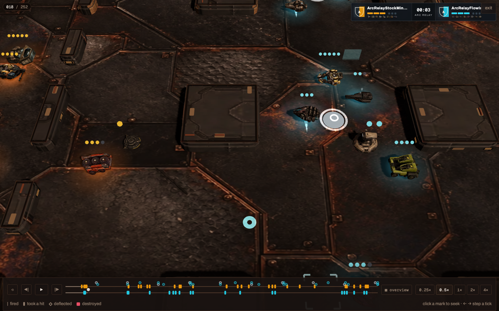
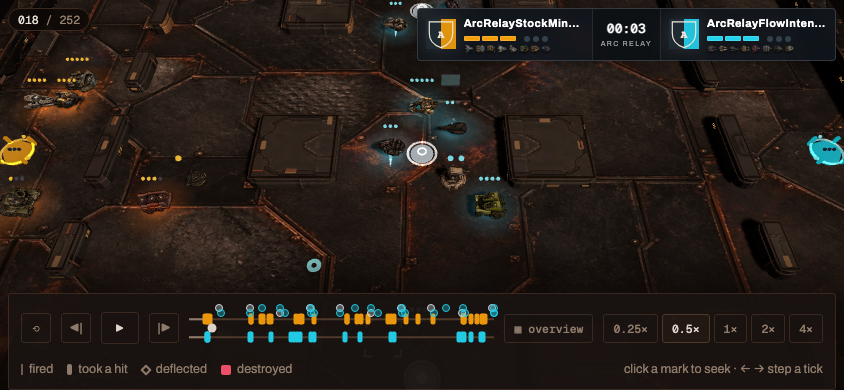

Minesmith + active Trip Node
Authoritative tick 18 · webgl · renderer-pan-and-wheel · 1440×900

Real replay, WebGL renderer, renderer-owned pan and zoom, browser scale 100%. Tick 18 shows both spawned payloads active.
Authoritative tick 18 · webgl · renderer-pan-and-wheel · 1440×900

Authoritative tick 18 · webgl · renderer-pan-and-wheel · 1440×900

Authoritative tick 18 · webgl · renderer-pan-and-wheel · 1440×900

Authoritative tick 18 · webgl · renderer-pan-and-wheel · 844×390
